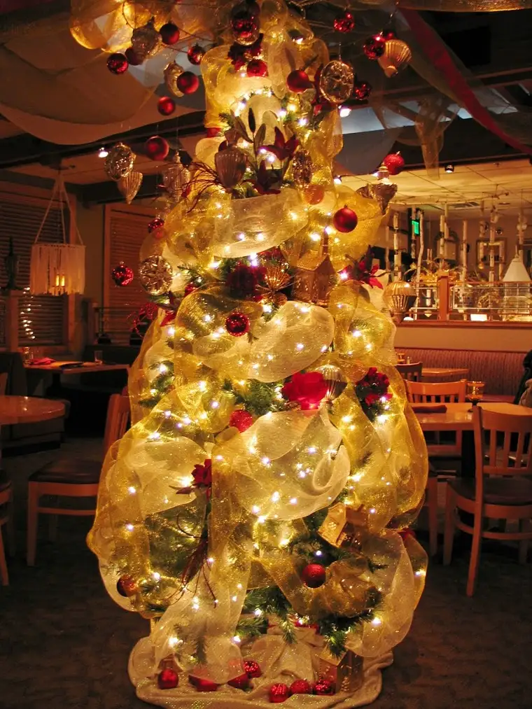

We’re keeping it simple this year for the holidays, which means we’re not even trying to keep up with the Joneses when it comes to decorating. [Clarification: I’M not keeping up with the Joneses. My kids might have had other ideas but those have been overruled by the main decorator of the household — moi.] Yep, this is as good as it’s going to get and I’m quite satisfied with it.
{kind=link}
It was a multi-step process with several significant traditions or symbols involved:
1. The decorating started several weeks back when the wreath we’d ordered from a neighborhood Boy Scout arrived and took its place of honor on the front of our house as the only outdoor Christmas decoration at the Salonen home. I love simplicity.
2. About a week ago, I dragged out the first of our indoor decorations from the garage and made a nice little display in a corner of the house with our Nativity scene as the main focus. It put the kids in a festive mood, and the girls began making their annual requests for cocoa and hot cider. I consider the Nativity scene the most important of our Christmas decorations, next to the Advent wreath. For the Nativity, we leave the baby Jesus out of the creche until Christmas Day, when he is born and finally appears in the place that has been reserved for him. It’s always exciting for the kids when the baby finally fills the crib that has awaited him (and they’ve, in turn, awaited).
3. Sidenote on the Advent wreath: it was a bust this year when I could only find three of the required four candles (each depicting one week leading to Christmas; the third candle being pink traditionally, the other three, purple to signify the Advent season). I had set it up anyway and we’d been lighting the appropriate number of candles at dinnertime, but our youngest was taken with them and ended up breaking two of them and lassoing them around the house…I gave up. It has been put away until next year, when I’ll give it another whirl.
4. Monday night I bought our first artificial tree. I assembled it at 1 a.m., hoping to surprise the kids when they awoke the next morning, but one section of the lights that came attached didn’t work. So, foiled again. Today I took it back to the store where I bought it and crossed my fingers. Thankfully, the lights work and the kids were quite helpful in decorating it this afternoon. They have no idea how close I came to not having a tree at all this year.
5. We went with a theme tree for the first time for several reasons. One, take five kids and multiple the number of ornaments they’ve either made or received as gifts through the years, plus some of ours, and you’ve got enough ornaments to fill, well, five or more trees. Also, my mother has had a friend of hers make personalized, wooden, hand-painted ornaments for the kids for years, now, and we’ve accumulated so many of them that they alone fill most of the fairly modest-sized tree that now graces our home. Though it was hard and resulted in a little bit of grumbling, it was time to let go of the need to have every ornament included.
Note: This tree decorating thing sure has gotten easier now that the kids are able to do most of it themselves! Liking that!
And now for a confession of sorts, or perhaps it’s more of a revelation. While I’ve been a very slow-starter in Christmas prep in the last several years, some of that has been quite intentional. The whole reason for decorating is to extol the excitement of Jesus’ coming. Some people (very few in our culture these days) wait until Christmas Eve to actually decorate and light up the Christmas tree. That is when the true celebration begins, after all, and the light comes shining into our lives in full force. Until then, we are in waiting, and in many ways, we wait in darkness but with great expectation. In other words, my pre-Christmas slothfulness isn’t entirely out of sync with the season. In fact, part of it is, I think, a quiet rebellion of the commercialism that has taken over and makes us feel that if we’re American at all, we’d better enter into the competition of (oftimes gawdy) Christmas fanfare.
I promise, my attitude it not as Scroogish as it might seem. Now that our meager decorations are up, I am enjoying them. I am in the dark as I type, but the Christmas lights on the tree are nearby, emitting a calming glow. It’s all good. But I also think it’s okay if, for whatever reason, we’re a little behind, a little less overboard than in years past, a little less “prepared.” In the end, the only preparing we really need to do is to ready our hearts. And it doesn’t take a whole lot of extra busyness and stress to accomplish that. In fact, the more peaceful we can get with ourselves, the more we’ll truly enjoy the Christmas season.
By the way, I’m off to buy some apple cider and cinnamon candies. If you’ve never tried the combination, you really ought to — it’s simple and delicious — heated up in a Crockpot or saucepan, of course. Yum!
I wish for you a meaningful waiting time. 
{kind=link}